Episode 87: "Son of ImaNewbie (Part 2). Last episode we discovered that ImaNewbie's illegitimate son, born to one of the Lost Tribe of Amazons, had come of age and was informed of a marvelous secret by his mother ... the fact that the rare genetic pairing had produced an offspring with secret super powers. This fact was hidden from ImaNewbie's son until he came of age. This was accomplished by the use of a mysterious glowing green crystal that had been placed around his neck by his mother at birth and only removed once he donned the specially tailored suit his mother had made him from the cloth given to her by his father, ImaNewbie. Ordered by his mother to go forth and rescue his father, now languishing in jail, Son of ImaNewbie (now henceforth referred to as SuperNewbie), sets out to find his long departed dad.
So now dear readers, with no further ado let me present Part Two of "Son of ImaNewbie" wherein SuperNewbie begins to experiment with his Super Powers.
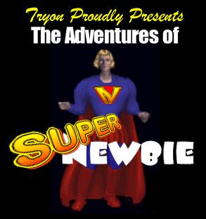
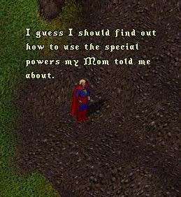
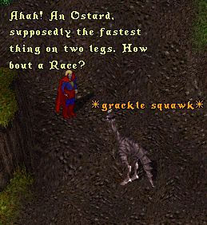
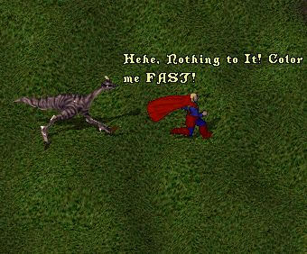
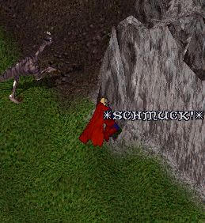
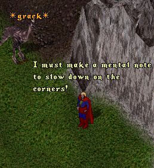
Gadzooks! This first experiment seems to have gone
somewhat awry. Could it be that perhaps our new
hero has inherited some of his fathers ineptness?
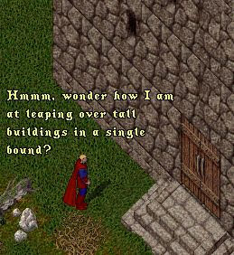
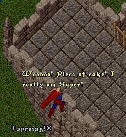
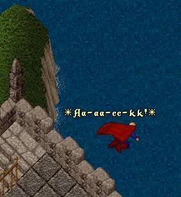
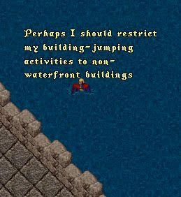
Well it certainly appears that SuperNewbie has "the
Right Stuff", but will he ever learn to control it? Well,
just like his father, one thing SuperNewbie believes in
is "If at first you don't succeed, Try, Try, again."
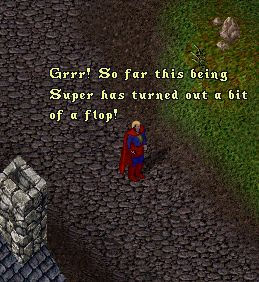
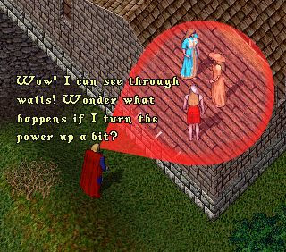
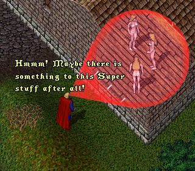